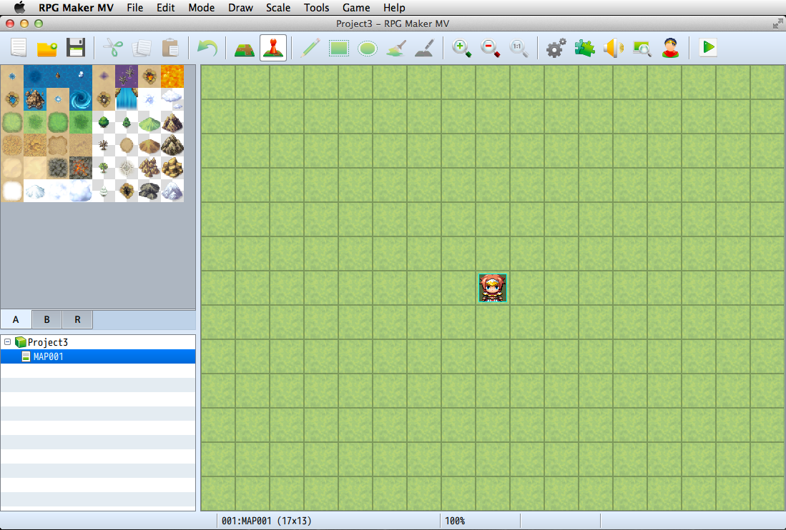

Format Support
RPG Maker MV Mac Version
The RPG Maker MV Mac Version that Mac users have long been waiting for has finally been released! The ease of use found in the Windows version has been maintained, making it possible for Mac users to create games using a deep and familiar interface.

Multiplatform Support
Games are now in HTML5 format, allowing not only for distribution to various environments such as Windows, Mac OS X, Android, and iOS, but it is now also possible to release games as-is online.
Please view [Output Formats] for more information.